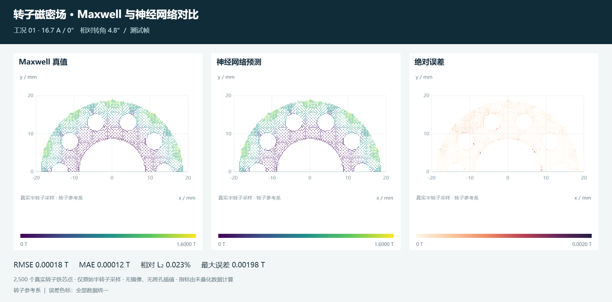

当前帧训练验证测试
正在准备磁密云图
正在读取工况信息…
首次仅加载所选工况，切换时按需读取，其余工况不占首屏流量。

正在加载…
坐标单位 mm · 磁密单位 T · 悬停查看采样点神经网络预测
PREDICTION绝对误差
均方根误差 · RMSE
对本帧全部 2,500 个转子点计算
平均绝对误差 · MAE
每个测量点等权
相对 L₂ 误差
‖预测 − 真值‖₂ / ‖真值‖₂
最大绝对误差
来自未量化预测，不受色标选择影响
如何解读这张云图
真实采样范围：展示原始 8,500 点中的 2,500 个转子铁芯点；数据仅覆盖参考系中的上半转子。原始点模式逐点显示；三角面模式连接同一区域的邻近点，经过长边与三角形外接圆半径筛选，近似保留采样点所呈现的孔洞及边界；不是CAD精确边界，也不镜像扩成全圆。
3D 图含义：水平 X、Y 为毫米坐标，竖直高度表示磁密大小 |B|（T）；误差图高度表示绝对误差（T）。它是二维采样场的高度显示，不是实体几何的三维磁场。误差图使用独立的高度与颜色标尺，不能和磁密图直接比较高度。
参考系：固定几何便于比较磁场随角度变化；世界坐标按数据提供的绝对机械角旋转（相对角 + 36°，按 360° 取模）。旋转显示不增加测量点，也不补成完整圆周。
模型评估：网页展示位置留出模型的预测，训练帧与未训练帧分别标记。位置按帧索引 mod 5 分组，30° 周期等效位置位于同一集合，避免周期重复泄漏。该评估衡量已知 12 组工况内的转角插值；不等同于新电流工况泛化能力。
12 组工况 · 全部转子点的汇总误差
| 集合 / 整帧数 | RMSE / T | MAE / T | 相对 L₂ |
|---|
汇总值基于各集合所有点共同计算；并非先逐帧计算相对误差再取平均。当前帧指标与汇总指标均使用未量化数组。
提示：可切换误差图为「当前帧自适应色标」观察误差的空间结构。该操作仅调整颜色，不改变指标。